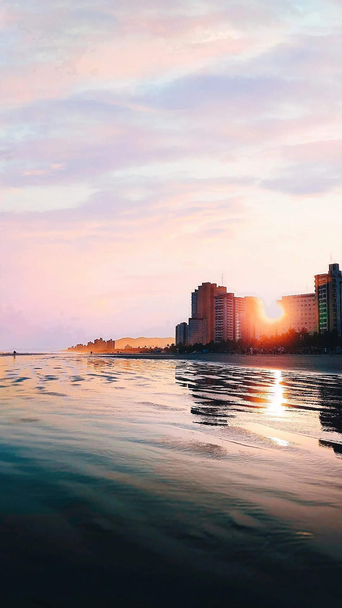

Habitada por pescadores desde o século XIX, Praia Grande constituía-se de vários núcleos espalhados ao longo da faixa litorânea. Em 1902, iniciou-se na região a construção do Forte de Itaipu. O acesso a suas terras, a partir de São Vicente, tornou-se mais fácil com a inauguração, em 1914, da Ponte Pênsil, que passava a ligar o Morro dos Barbosas, na ilha, ao Morro Japuí, no continente, vencendo a parte estreita do Mar Pequeno. A ponte foi construída para conduzir um emissário de esgoto, parte do plano de saneamento de Santos, elaborado pelo engenheiro Francisco Saturnino de Brito. A Casa August Klonne, da Alemanha, encarregou-se do projeto. Outro importante fator de desenvolvimento
para a região foi a construção do ramal Santos-Juquiá da Estrada de Ferro Sorocabana. Mas sua ocupação só veio a se tornar mais efetiva, na década de 50, com a construção da rodovia Padre Manoel da Nóbrega e da abertura do Bairro Cidade Ocian. A primeira medida administrativa ocorreu em 18 de fevereiro de 1959, com a criação do 2º subdistrito (Boqueirão) do distrito-sede do município de São Vicente. A autonomia municipal foi adquirida em 28 de fevereiro de 1964, quando além do próprio município de Praia Grande, foi criado um distrito com o mesmo nome, com sede no 2º subdistrito (Boqueirão) e território desmembrado de São Vicente.
Fonte: Fundação SEADE - 2006